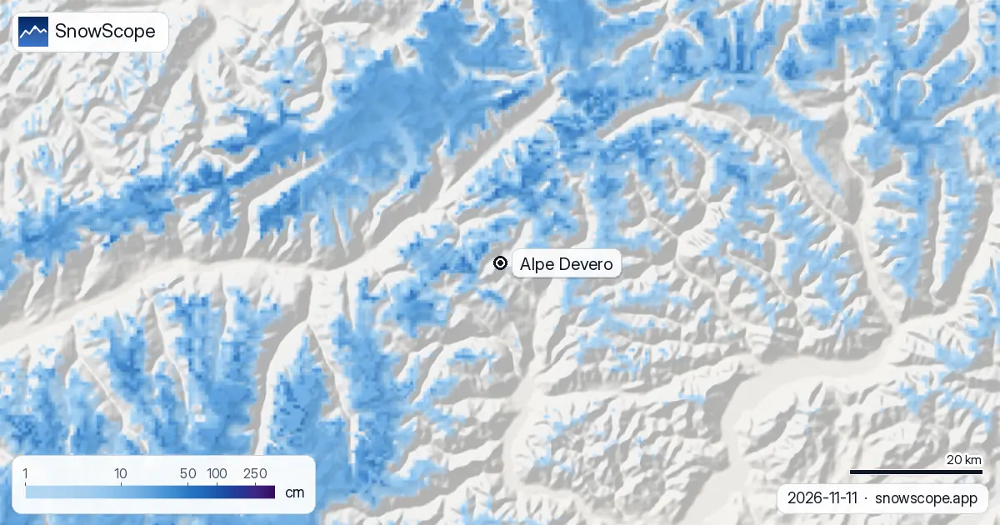

Alpe Devero, conditions de neige : 2 cm au sommet, 36 cm prévus (12 novembre 2026)
L'Alpe Devero occupe un haut vallon au-dessus de Baceno, dans la vallée de l'Ossola : un hameau sans voitures à 1640 m, une poignée de remontées et de longs hivers. Sur le calcul du modèle du 11 novembre, la neige ne fait que commencer : 2 cm au sommet (2201 m), 0 cm à mi-pente (1920 m) et 0 cm en bas. La semaine à venir s'annonce mieux : 21 cm en bas, 24 cm à mi-pente et 36 cm au sommet.
Consultez les prévisions neige en temps réel pour Alpe Devero sur l'application SnowScopeHauteurs de neige, alertes poudreuse et carte 3D, gratuitement.
La situation du jour
La semaine passée n'a donné qu'un filet : 3 cm en bas, 8 cm à mi-pente et 11 cm au sommet, dont 3 cm dans les dernières 48 heures en haut. Sur une pente ensoleillée de novembre, cela fond presque aussi vite que cela tombe, d'où les 2 cm qui restent au sommet.
Les 24 prochaines heures apportent 8 cm au sommet, et le total sur sept jours monte à 36 cm là-haut, 24 cm à mi-pente et 21 cm sur l'alpage lui-même. Comme toujours, ce sont des valeurs du modèle pour la zone, pas une mesure sur la piste.
Devero dans un hiver habituel
Nos 46 hivers passés (1980-81 à 2025-26) décrivent une station où la couche se construit lentement et reste longtemps. La première neige est là en général au sommet le 12 octobre, à mi-pente le 1er novembre et en bas le 5 novembre ; la dernière neige ne quitte le sommet que vers le 27 juin.
Un novembre habituel compte 7 cm en bas, 11 cm à mi-pente et 17 cm au sommet ; décembre atteint 21, 28 et 40 cm ; les mois les plus enneigés sont mars en bas et à mi-pente (54 cm et 69 cm) et avril au sommet (92 cm).
Combien de neige, et à quelle fréquence
Le pic d'un hiver du milieu vaut 71 cm en bas, 87 cm à mi-pente et 111 cm au sommet. Au sommet, 13 semaines de l'hiver ont 50 cm ou plus dans 9 hivers passés sur 10 ; à mi-pente, la semaine la plus sûre est la semaine 13, fin mars, avec 50 cm ou plus dans 91 % des hivers et une hauteur du milieu de 72 cm.
L'hiver dernier a culminé à 62 cm, 78 cm et 102 cm. Le pic du milieu au sommet a glissé de 122 cm sur les 15 premiers de nos hivers à 102 cm sur les 15 derniers.
Pourquoi on vient à Devero
Le domaine cartographié est petit, 5 km de pistes et 5 remontées, mais le vallon s'ouvre sur le parc naturel Veglia-Devero : des sentiers en raquettes sur l'alpage plat, du ski de randonnée sur les pentes autour, et un village sans voitures. Les chiffres de neige ci-dessus valent pour la zone des remontées ; les itinéraires au-dessus gardent la neige plus longtemps.

Conseils aux skieurs
- Avec une couche aussi mince, attendez la neige prévue avant de planifier une journée de ski à Devero.
- Les itinéraires en raquettes et à ski de randonnée autour de l'alpage demandent le bulletin d'avalanche AINEVA dès que la neige s'accumule.
- Les remontées ouvrent selon le calendrier de la station, pas selon notre carte : vérifiez avant de monter depuis Baceno.
Autres cartes (sites externes)
Références et crédits
- Alpe Devero, site officiel de la station et du parc Veglia-Devero www.alpedevero.it/
- AINEVA, bulletins d'avalanche des Alpes italiennes bollettini.aineva.it/
À propos de ces chiffres
Chiffres de neige : le modèle de neige SnowScope, calcul du 11 novembre 2026, à trois altitudes de la station (valeurs du modèle pour la zone, pas une mesure sur la piste), et notre historique de neige, 46 hivers passés (1980-81 à 2025-26), un modèle du passé corrigé de l'altitude. Longueur des pistes et nombre de remontées : cartographie OpenSkiMap. Les prévisions changent : regardez la carte avant de partir.
Bulletins d'avalanche officiels: AINEVA – Associazione Interregionale Neve e Valanghe
Citer ce bulletin
Pour la recherche, l'enseignement ou la presse : chiffres et graphiques réutilisables librement sous CC BY 4.0 avec cette citation.
SnowScope (2026), Alpe Devero, conditions de neige : 2 cm au sommet, 36 cm prévus (12 novembre 2026), https://snowscope.app/blog/fr/2026/11/alpe-devero-snow-conditions-12-november-2026.html, consulté le 2026-11-12
SnowScope (Atlas Labs). (2026, November 12). Alpe Devero, conditions de neige : 2 cm au sommet, 36 cm prévus (12 novembre 2026). SnowScope snow reports. https://snowscope.app/blog/fr/2026/11/alpe-devero-snow-conditions-12-november-2026.html
BibTeX
@misc{snowscope2026alpedeverosnowconditions,
author = {{SnowScope (Atlas Labs)}},
title = {Alpe Devero, conditions de neige : 2 cm au sommet, 36 cm prévus (12 novembre 2026)},
year = {2026},
month = nov,
howpublished = {\url{https://snowscope.app/blog/fr/2026/11/alpe-devero-snow-conditions-12-november-2026.html}},
note = {Published 2026-11-12 09:44 UTC; accessed 2026-11-12}
}· CC BY 4.0 · Méthodes, données et outils →
Alpe Devero : neige et température selon l'altitude, cet hiver vs l'hiver dernier (outils) →
Suivre Alpe Devero
Gratuit : un message quand la neige arrive, et la météo chaque matin.
Autres bulletins neige

Y a-t-il plus de neige qu'il y a un an ? Nous avons comparé aujourd'hui avec le 8 novembre de l'hiver dernier dans 4 stations dans les Alpes : 0 ont …

Saas-Fee est sans voitures : le train jusqu'à Viège et le CarPostal 511, la route de la vallée du Rhône et les trains autos, les parkings et bus gratuits.

Notre série de 46 hivers dans les Alpes, 108 points de 667 à 3 872 m : moins de jours de neige partout, nettement à 81 %. Ce qui a changé et pourquoi.